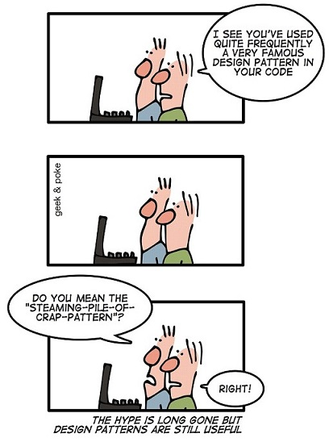

Design pattern is a general repeatable solution to a commonly occurring problem in software design. A design pattern isn’t a finished design that can be transformed directly into code. It is a description or template for how to solve a problem that can be used in many different situations.
If you are new to programming, probably you won’t hear or use “design pattern” concept a lot for the first couple months/years. But after some time, when you start to write more meaningful programs, you’ll definitely need to use some tested and proven design patterns in your code. Design patterns can speed up the development process by providing tested, proven development paradigms. Effective software design requires considering issues that may not become visible until later in the implementation. Reusing design patterns helps to prevent subtle issues that can cause major problems and improves code readability for coders and architects familiar with the patterns.

Design patterns gained popularity in computer science after the book Design Patterns: Elements of Reusable Object-Oriented Software was published in 1994 by the so-called “Gang of Four” (Gamma et al.), which is frequently abbreviated as “GoF”. This important book describes various development techniques and pitfalls in addition to providing twenty-three object-oriented programming design patterns. The four authors were Erich Gamma, Richard Helm, Ralph Johnson and John Vlissides.
In the case of object-oriented programming, design patterns are generally aimed at solving the problems of object generation and interaction, rather than the larger scale problems of overall software architecture. They give generalized solutions in the form of templates that may be applied to real-world problems.
Design patterns were originally grouped into the categories: creational patterns, structural patterns, and behavioral patterns, and described using the concepts of delegation, aggregation, and consultation.
Creational design patterns
These design patterns are all about class instantiation. This pattern can be further divided into class-creation patterns and object-creational patterns. While class-creation patterns use inheritance effectively in the instantiation process, object-creation patterns use delegation effectively to get the job done.
- Abstract Factory: Creates an instance of several families of classes
- Builder: Separates object construction from its representation
- Factory Method: Creates an instance of several derived classes
- Object Pool: Avoid expensive acquisition and release of resources by recycling objects that are no longer in use
- Prototype: A fully initialized instance to be copied or cloned
- Singleton: A class of which only a single instance can exist
Structural design patterns
These design patterns are all about Class and Object composition. Structural class-creation patterns use inheritance to compose interfaces. Structural object-patterns define ways to compose objects to obtain new functionality.
- Adapter: Match interfaces of different classes
- Bridge: Separates an object’s interface from its implementation
- Composite: A tree structure of simple and composite objects
- Decorator: Add responsibilities to objects dynamically
- Facade: A single class that represents an entire subsystem
- Flyweight: A fine-grained instance used for efficient sharing
- Private Class Data: Restricts accessor/mutator access
- Proxy: An object representing another object
Behavioral design patterns
These design patterns are all about Class’s objects communication. Behavioral patterns are those patterns that are most specifically concerned with communication between objects.
- Chain of responsibility: A way of passing a request between a chain of objects
- Command: Encapsulate a command request as an object
- Interpreter: A way to include language elements in a program
- Iterator: Sequentially access the elements of a collection
- Mediator: Defines simplified communication between classes
- Memento: Capture and restore an object’s internal state
- Null Object: Designed to act as a default value of an object
- Observer: A way of notifying change to a number of classes
- State: Alter an object’s behavior when its state changes
- Strategy: Encapsulates an algorithm inside a class
- Template method: Defer the exact steps of an algorithm to a subclass
- Visitor: Defines a new operation to a class without change
References:
- https://sourcemaking.com/design_patterns
- http://www.blackwasp.co.uk/gofpatterns.aspx
- https://en.wikipedia.org/wiki/Software_design_pattern